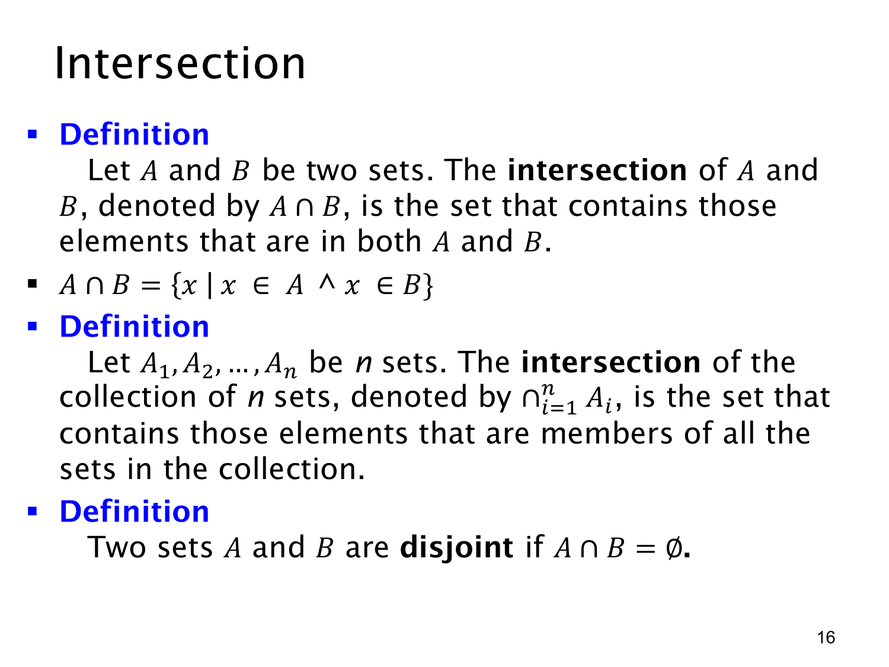

L1.4 · 第 16 页讲解原文
查看这一页课件

交集与不相交
集合 A,B 的交集（intersection）记为 A∩B，它只包含同时属于 A 和 B 的元素：
A∩B={x∣x∈A∧x∈B}.
与并集对应的逻辑“或”不同，交集使用逻辑且。例如 A={1,2,3}、B={3,4}，只有 3 同时在两边，所以 A∩B={3}。
对于 n 个集合 A1,…,An，总交集写作
i=1⋂nAi={x∣对所有 i=1,…,n，都有 x∈Ai}.
因此，总交集要求元素出现在每一个集合中。它对应关于索引 i 的全称条件；只出现在其中几个集合的元素不会进入结果。若这批集合中有一个是空集，则不存在能属于所有集合的元素，整个交集为空集。
本页最后定义：若 A∩B=∅，便称 A,B 不相交（disjoint）。例如 {1,2} 与 {3,4} 不相交。不相交不等于两个集合都为空，也不等于它们的并集为空；它只表示没有共同元素。